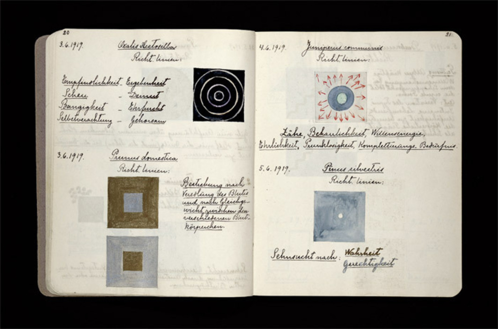
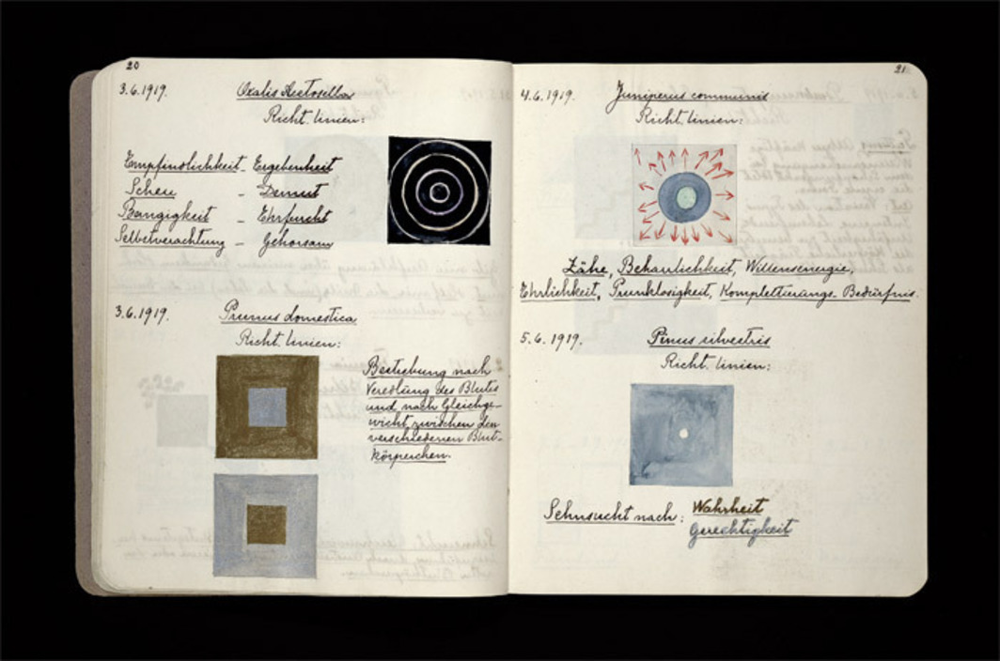

In 1880 Hilma’s younger sister Hermina died. It was at this time that the spiritual dimension of her life began to develop. Her interest in abstraction and symbolism came from Hilma af Klint's involvement in spiritism, very much in vogue at the end of the 19th and beginning of the 20th century. Hilma's first experiments in spiritual investigation began in 1879. Hilma af Klint became interested in the Theosophy of Madame Blavatsky and the philosophy of Christian Rosencreutz. In 1908 she met Rudolf Steiner, the founder of the Anthroposophical Society, who was on a visit to Stockholm. Steiner initiated her in his own theories regarding the Arts, and would have a certain influence on her paintings later in life. Several years later, in 1920, she met him again at the Goetheanum in Dornach, Switzerland, the headquarters of the Anthroposophical Society. Between 1921 and 1930 she spent long periods at the Goetheanum.
Af Klint's work can be understood in the wider context of the Modernist search for new forms in artistic, spiritual, political and scientific systems at the beginning of the 20th century. One will find the same interest in spirituality in other artists during this same period, such as Wassily Kandinsky, Piet Mondrian, Kasimir Malevitch and the French Nabis of which many were, like af Klint, inspired by the Theosophical Movement. However, the artistic transition to abstract art and the nonfigurative painting of Hilma af Klint would occur without any contacts with the contemporary modern movements.
The works of Hilma af Klint are mainly spiritual, and her artistic work is a consequence of this.
Sources: artforum ny times interior design